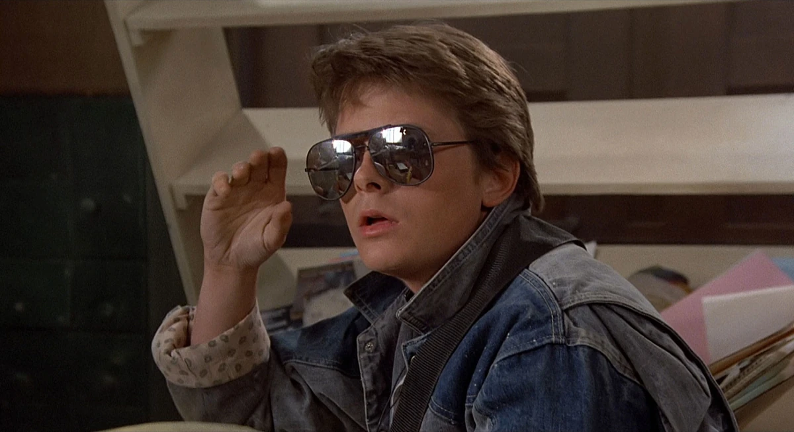

Back To The Future: Characters
Marty McFly
Portrayed by Michael J. Fox
Marty McFly is a relatable and charismatic teenager from Hill Valley, California. A rock-and-roll enthusiast with a strong sense of adventure, Marty finds himself thrown into the world of time travel when he teams up with Doc Brown. Marty’s quick thinking and loyalty to his friends often pull him out of difficult situations. He is both a modern teenager and an accidental hero, navigating the past, present, and future while dealing with the challenges of adolescence.
Doc Brown
Portrayed by: Christopher Lloyd

Doc Brown is a brilliant but eccentric inventor, known for his wild white hair and an iconic DeLorean time machine. With a passion for science and an often unpredictable nature, he is the mastermind behind the time travel technology that changes Marty McFly's life. His energetic personality, coupled with his unpredictable genius, make him both a mentor and a guide for Marty. Doc’s catchphrase "Great Scott!" has become iconic, as has his unwavering commitment to the principles of science.
Lorraine Baines McFly
Portrayed by: Lea Thompson

Lorraine Baines McFly is Marty’s loving, albeit somewhat overbearing mother. She is a key figure in the time-traveling adventure as Marty must ensure that his parents meet and fall in love in the past to secure his future. A teenager in 1955, Lorraine's relationships with Marty and George McFly shape the course of Marty’s journey. Throughout the story, Lorraine’s sense of independence and her evolving relationship with George highlight her complexity as a character.
George McFly
Portrayed by: Crispin Glover

George McFly is Marty’s somewhat timid and awkward father. In 1955, George is a shy teenager who is often pushed around, but Marty’s influence helps him develop into a more confident individual. Through his interactions with Lorraine, George’s character arc is an essential part of the plot, highlighting themes of personal growth and the impact of time on relationships. His transformation from a passive character to a stronger, more self-assured individual is one of the central elements of the film.